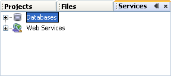
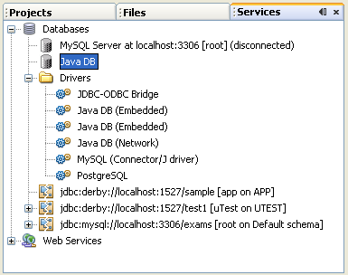
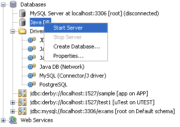
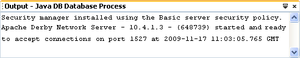

Java uses something called JDBC (Java Database Connectivity) to connect to databases. There's a JDBC API, which is the programming part, and a JDBC Driver Manager, which your programmes use to connect to the database.
JDBC allows you to connect to a wide-range of databases (Oracle, MySQL, etc), but we're going to use the in-built database you get with the Java/NetBeans software. The database is called Java DB, a version of Apache Derby. It runs on a virtual server, which you can stop and start from within NetBeans.
To check that have everything you need, have a look at the Services tab in NetBeans. If you can't see the Services tab, click Window from the NetBeans menu. From the Window menu, select Services. You should see something like this:

Expand the Databases item to see a Java DB item, and a Drivers section:

The idea is that you start the Java DB virtual server, and then create and manipulate databases on the server. There should be a database called sample already set up: (But don't worry if it's not there as we'll create our own database.)
In the image above, there are three databases: one is called sample, one is called test1, and the other is called exams.
For the project in this section, we're going to set up a new database. You'll then learn how to connect to this database using Java code. The database we'll create will be a simple one-table affair, rather than multiple tables connected together. You can indeed create multiple tables with Java DB, but we don't want to complicate things unnecessarily.
The first thing to do is to start the server. So right click on Java DB. You'll see a menu appear. Select Start Server:

Have a look at the Output window and you'll see a few messages appear: (If you have a firewall running, you'll need to let the Java DB server through.)

Once the server is up and running you can create databases. You'll see how to do that in the next lesson.